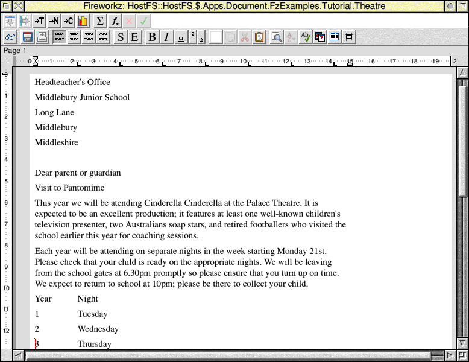
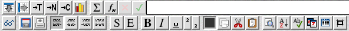
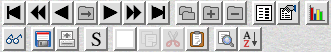

This chapter will describe some of the fundamental features of Fireworkz on RISC OS.
It includes sections on:
The three buttons on your mouse each perform separate functions, and their names reflect this. Their names are:
Many actions using the mouse are performed by clicking or double-clicking an object. To do this, position the pointer over the required object (e.g. the Fireworkz application icon) and press and release Select (the left mouse button) once or twice respectively.
Pressing Menu (the middle mouse button) with the pointer inside a Fireworkz window displays the main application menu, from which you may choose an option by pointing at it and clicking with the Select button.
Adjust (the right mouse button) can be used to access some short-cuts and more sophisticated functions.
When you use Fireworkz to create a new document or load an existing document, the document will appear in a window on your desktop. For example: 
The central area in white represents the paper onto which you can enter your document. Anything inside this area will appear when your document is printed, anything outside this area will not appear.
The other areas of the window are explained briefly below.
The title bar of your document window includes some helpful information about your document:
The title bar also contains buttons at the left and right to control the window:
Please refer to the RISC OS User Guide or the RISC OS online documentation.
The toolbar along the top allows you to access all the most commonly used commands quickly and easily by a single click on a tool button.

From time to time, certain tool buttons may be greyed out to indicate that they cannot be used at the moment. For example, you cannot use the tool button to remove an area of your document uness you have an area selected. Therefore, if you do not have an area selected, the tool button will be greyed out.
As soon as you select an area, the tool button will become available for use.
Certain tool buttons may appear to be 'pressed in' or 'pushed out' to indicate whether or not particular options are currently selected. For example, if the tool button appears 'pressed in' (i.e. bold is currently selected)
then any text which you type will appear in a bold font.
If the tool button appears 'pushed out' (i.e. bold is not currently selected)
then text will appear in normal font weight.
If you click the tool button, it will alternate between these two states.
The toolbar will change depending on the type of work you area doing. If you are in the middle of writing a letter, the word processing and spreadsheet tool buttons will be available. However, if you are currently within an area of your document which contains a database, then the database tool buttons will appear.

The status line appears below the toolbar. It provides help and information about the work in progress. For example:
Whilst you are familiarising yourself with how Fireworkz works, you should make use of the help provided by the status line.
There are two rulers that you can choose to display:
The horizontal ruler can be used to alter the:
The vertical ruler can be used to alter the:
If you point within the document window and click the Menu button, the Fireworkz menu will appear.
Several menus contain sub-menus (or simple dialogue boxes); these are indicated by the right-pointing arrow alongside the option name. These sub-menus may be accessed by sliding the mouse pointer off the right-hand side of the menu past the right-pointing arrow; this will cause the sub-menu (or simple dialogue box) to be displayed.
Other options can be chosen by pointing at them so that they are highlighted and then clicking .
If an option has an ellipsis (…) to its right, this indicates that the command needs to pop-up a more complex dialogue box that cannot operate as a standard RISC OS Window Manager dialogue-box-as-menu. Typically these will be dialogue boxes which present lists of items for selection. The ellipsis on such menu options is omitted in this document for brevity.
Some frequently used menu options have keyboard shortcuts which are shown alongside the option name in each menu.
From time to time, certain menu options may be greyed out (disabled) to indicate that they cannot be used at the moment. For example, you cannot use the option to sort an area of your document unless you have an area selected. If you do not have an area selected, the option will be greyed out. As soon as you select an area, the option will no longer be greyed out.